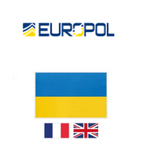

LOCKBIT
THIS ARCHIVE IS OVERSEEN AND UPDATED
BY BUGZORC UNTIL FEBRUARY 24TH 2024.
CHECK GITHUB FOR THE LATEST ARCHIVE.

Suspect arrested in Ukraine
Ukrainian authorities persevered through the challenges of a war-torn environment. Their collaborative effort led to the successful apprehension of suspects in Ukraine, showcasing their resilience and commitment to upholding the rule of law amidst adversity.
Despite the formidable constraints posed by the ongoing Russian war of aggression against Ukraine, local authorities persisted in their pursuit of justice, navigating through the complexities and challenges inherent in such a volatile environment, especially in relation to temporarily occupied territories in Eastern Ukraine. Amidst heightened tensions and logistical hurdles, the investigation encountered numerous obstacles that threatened to impede progress. However, through unwavering determination and resourcefulness, authorities pressed forward, adapting their strategies to circumvent the adversities presented by the conflict. The collaborative effort yielded tangible results, culminating in the successful house search and interview of suspects in Ukraine Ternopil on the request of the French judicial authorities. This achievement underscores the resilience and commitment of international law enforcement agencies to uphold the rule of law, even in the face of the most daunting circumstances.
Link: